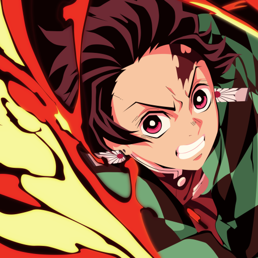
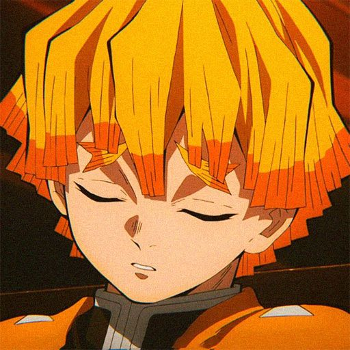
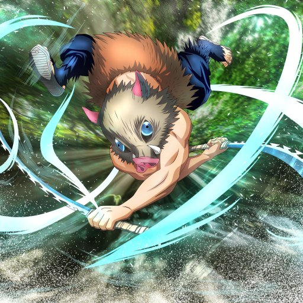

Starting with the main character : Tanjiro Kamado
Tanjiro's distinctive hanafuda earrings have a deeper significance than just being a family heirloom. The design of the earrings has historical ties within the Demon Slayer Corps. They are reminiscent of the earrings worn by Yoriichi Tsugikuni, the legendary Sun Breathing swordsman who played a pivotal role in the history of demon slaying. This connection hints at Tanjiro's deep-rooted heritage and potential as a Demon Slayer.
Now going onto : Zenitsu Agatsuma
Beyond his abilities as a Demon Slayer, Zenitsu has a hidden talent for gardening. This isn't widely mentioned in the main series, but it's noted in supplementary materials and interviews. Zenitsu has a knack for nurturing plants and has a calming effect on nature. This skill is a stark contrast to his usual frantic and fearful behavior, showcasing a different, more serene side of his personality. He often uses this talent to create beautiful, peaceful garden spaces that bring him a sense of tranquility.
Now going onto : Inosuke Hashibira
Despite his wild and aggressive exterior, Inosuke has a surprisingly artistic talent. He is quite skilled at creating intricate wood carvings. This skill is a nod to his upbringing in the mountains, where he often used his time and surroundings to craft various objects out of wood. These carvings are detailed and beautiful, showing a stark contrast to his typically brash and untamed personality.This hidden talent highlights a different, more creative aspect of Inosuke's character that isn't often showcased in the main storyline.
